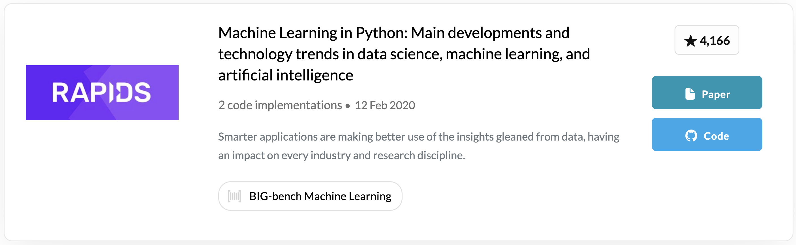
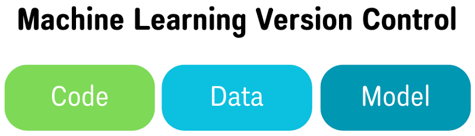

19 Reproducibility
19.1 Goal
This session aims to highlight the importance of reproducibility in AI-driven Arctic research. Participants will learn about the challenges and best practices for ensuring that AI models and their results can be reproduced by other researchers, a cornerstone for building trust and advancing the field. The discussion will cover strategies for documenting experiments, sharing data and code, and using version control systems.
19.2 Introduction
Reproducibility is not a new topic when it comes to artificial intelligence and machine learning in science, but is more important than ever as AI research is often criticized for not being reproducible. This becomes particularly problematic when validation of a model requires reproducing it.
19.3 Why is Reproducibility Important?
19.3.1 Reproducible vs. Replicable
- Reproducible means that other researchers can take the same data, run the same analysis, and get the same result.
- Replicable means other researchers can take different data, run the same analysis, and get their own result without errors.
19.4 The Reproducibility Checklist
The Reproducibility Checklist was created by Canadian computer scientist, Joelle Pineau, with the goal of facilitating reproducible machine learning algorithms that can be tested and replicated. Their checklist is as follows:
For all models and algorithms, check that you include:
For any theoretical claim, check that you include:
For all figures and tables that include empirical results, check that you include:
*With sensitive data or proprietary code, scientists may not wish to release all of its code and data. In this case, data can be anonymized and/or partial code can be released that won’t run but can be read and reproduced
Consider the sensitivity of your data/code when publishing. - Sensitive data should be anonymized before publishing - Researchers or organizations may only release partial code if their code is propietary - Be sure that the partial code released is still entirely executable
19.6 Model Repositories
PyTorch Hub is a pre-trained model repository designed to facilitate reproducibility and enable new research. It is easily usable with Colab and Papers with Code, but models must be trained on openly accessible data.
- Papers with Code is an open source hub for publications that include direct links to GitHub code, no account needed to access datasets.  ## Version Control 
Version control is the process of keeping track of every individual change by each contributor that’s saved in a version control framework, or a special database. Keeping a history of these changes to track model performance relative to model parameters saves the time you’d spend retraining the model. The three components of version control in machine learning are:
Code: We recommend writing and storing your model code in the same language as your implementation code to make it easier to maintain all code and dependencies
Data: Versioning should link the data to the appropriate metadata and note any changes in either
Model: The model connects your code and data with your model parameters and analysis
Using a version control system ensures easier:
Collaboration
Versioning
- If your model breaks, you’ll have a log of any changes that were made, allowing you or others to revert back to a stable version
Dependency tracking
- You can test more than one model on different branches or repositories, tune the model parameters and hyperparameters, and monitor the accuracy of each implemented change
Model updates
- Version control allows for incrementally released versions while continuing the development of the next release
19.7 Summary
Consider the following to ensure your model is reproducible: - Use the reproducibility checklist for algorithms, theoretical claims, and figures/tables. - Anonymize any sensitive data and remove proprietary code before publishing - BUT still provide training data and enough code for others to replicate your model - Share data and metadata, be transparent in any dependencies needed to run your model, use easily installable computational analysis tools and pipelines, and ensure installed software behaves the same on every machine (i.e. runtime) - Use a pre-trained model repository (ex. PyTorch Hub) and publish to open-source journals/websites (ex. Papers with Code) - Practice efficient version control (recommend GitHub if working with collaborators)
19.8 Hands-On Activity
LEGO Metadata: In groups of 3-5 people, take ~15 minutes to create a structure out of LEGO bricks and write instructions for a group who will recreate your structure based on these instructions.
Groups will then be rotated and given instructions and LEGO pieces from another group where they will have ~15 minutes to attempt to recreate that group’s structure.
We will have a closing group discussion about this activity. Some questions include: - What were some assumptions you made while writing your instructions? - Were there any unexpected hurdles you encountered when writing your instructions or trying to replicate another group’s structure? - What did you find most difficult about this activity? - Now that you see how successful or unsuccessful the other group was in recreating your structure, is there anything you would do differently?
19.9 References & Resources
- Gundersen, Odd Erik, and Sigbjørn Kjensmo. 2018. “State of the Art: Reproducibility in Artificial Intelligence”. Proceedings of the AAAI Conference on Artificial Intelligence 32 (1). https://doi.org/10.1609/aaai.v32i1.11503.
- Gundersen, Odd Erik, Yolanda Gil, and David W. Aha. “On Reproducible AI: Towards Reproducible Research, Open Science, and Digital Scholarship in AI Publications.” AI Magazine 39, no. 3 (September 28, 2018): 56–68. https://doi.org/10.1609/aimag.v39i3.2816.
- “How the AI Community Can Get Serious about Reproducibility.” Accessed September 18, 2024. https://ai.meta.com/blog/how-the-ai-community-can-get-serious-about-reproducibility/.
- Abid, Areeba. “Addressing ML’s Reproducibility Crisis.” Medium, January 7, 2021. https://towardsdatascience.com/addressing-mls-reproducibility-crisis-7d59e9ed050.
- PyTorch. “Towards Reproducible Research with PyTorch Hub.” Accessed September 18, 2024. https://pytorch.org/blog/towards-reproducible-research-with-pytorch-hub/.
- Stojnic, Robert. “ML Code Completeness Checklist.” PapersWithCode (blog), April 8, 2020. https://medium.com/paperswithcode/ml-code-completeness-checklist-e9127b168501.
- Akalin, Altuna. “Scientific Data Analysis Pipelines and Reproducibility.” Medium, July 5, 2021. https://towardsdatascience.com/scientific-data-analysis-pipelines-and-reproducibility-75ff9df5b4c5.
- Hashesh, Ahmed. “Version Control for ML Models: What It Is and How To Implement It.” neptune.ai, July 22, 2022. https://neptune.ai/blog/version-control-for-ml-models.
- NCEAS Learning Hub: https://www.nceas.ucsb.edu/learning-hub.